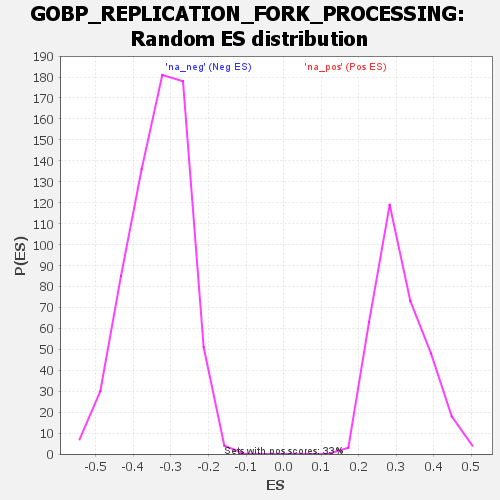

| | | Dataset | wbh_treatment_res_for_gsea |
| Phenotype | NoPhenotypeAvailable |
| Upregulated in class | na_neg |
| GeneSet | GOBP_REPLICATION_FORK_PROCESSING |
| Enrichment Score (ES) | -0.6387335 |
| Normalized Enrichment Score (NES) | -1.9128205 |
| Nominal p-value | 0.0 |
| FDR q-value | 0.13733296 |
| FWER p-Value | 0.144 |
Table: GSEA Results Summary
Fig 1: Enrichment plot: GOBP_REPLICATION_FORK_PROCESSING
Profile of the Running ES Score & Positions of GeneSet Members on the Rank Ordered List
| SYMBOL | RANK IN GENE LIST | RANK METRIC SCORE | RUNNING ES | CORE ENRICHMENT | | 1 | PARP1 | 524 | 3.471 | 0.0223 | No |
| 2 | SMARCAL1 | 1826 | 1.889 | -0.0039 | No |
| 3 | FBH1 | 2432 | 1.544 | -0.0080 | No |
| 4 | CENPX | 2640 | 1.439 | 0.0016 | No |
| 5 | DDX11 | 4638 | 0.779 | -0.0642 | No |
| 6 | SAMHD1 | 5180 | 0.663 | -0.0766 | No |
| 7 | EXD2 | 5193 | 0.661 | -0.0690 | No |
| 8 | MUS81 | 5552 | 0.593 | -0.0753 | No |
| 9 | ZNF365 | 6155 | 0.484 | -0.0922 | No |
| 10 | RTEL1 | 7009 | 0.360 | -0.1199 | No |
| 11 | CENPS | 7139 | 0.341 | -0.1207 | No |
| 12 | RFWD3 | 7272 | 0.323 | -0.1218 | No |
| 13 | CDK9 | 7284 | 0.322 | -0.1183 | No |
| 14 | ALYREF | 7852 | 0.253 | -0.1366 | No |
| 15 | BOD1L1 | 7952 | 0.242 | -0.1374 | No |
| 16 | ATRX | 8219 | 0.214 | -0.1448 | No |
| 17 | EME2 | 11843 | -0.081 | -0.2803 | No |
| 18 | OOEP | 13259 | -0.163 | -0.3317 | No |
| 19 | EME1 | 13706 | -0.176 | -0.3464 | No |
| 20 | PCNA | 15097 | -0.280 | -0.3953 | No |
| 21 | KHDC3L | 15269 | -0.295 | -0.3982 | No |
| 22 | ZRANB3 | 15842 | -0.333 | -0.4157 | No |
| 23 | TONSL | 16574 | -0.398 | -0.4385 | No |
| 24 | SETMAR | 16673 | -0.409 | -0.4372 | No |
| 25 | ATR | 17539 | -0.492 | -0.4639 | No |
| 26 | FAM111A | 17798 | -0.519 | -0.4673 | No |
| 27 | TRAIP | 19130 | -0.692 | -0.5091 | No |
| 28 | RAD51 | 19380 | -0.729 | -0.5096 | No |
| 29 | CARM1 | 21106 | -1.033 | -0.5621 | No |
| 30 | THOC1 | 21523 | -1.131 | -0.5641 | No |
| 31 | NBN | 21958 | -1.233 | -0.5656 | No |
| 32 | DNA2 | 23901 | -1.867 | -0.6161 | Yes |
| 33 | RAD50 | 23903 | -1.868 | -0.5936 | Yes |
| 34 | GEN1 | 24333 | -2.080 | -0.5846 | Yes |
| 35 | BRCA1 | 24533 | -2.203 | -0.5654 | Yes |
| 36 | MRE11 | 25062 | -2.559 | -0.5543 | Yes |
| 37 | ETAA1 | 25165 | -2.633 | -0.5263 | Yes |
| 38 | BARD1 | 25600 | -3.052 | -0.5058 | Yes |
| 39 | WRN | 25978 | -3.639 | -0.4759 | Yes |
| 40 | RBBP8 | 26052 | -3.819 | -0.4325 | Yes |
| 41 | BRCA2 | 26260 | -4.474 | -0.3861 | Yes |
| 42 | BLM | 26373 | -4.905 | -0.3310 | Yes |
| 43 | FANCM | 26375 | -4.920 | -0.2715 | Yes |
| 44 | PRIMPOL | 26540 | -6.999 | -0.1930 | Yes |
| 45 | MMS22L | 26551 | -7.474 | -0.1030 | Yes |
| 46 | NUCKS1 | 26571 | -8.618 | 0.0006 | Yes |
Table: GSEA details [plain text format]

Fig 2: GOBP_REPLICATION_FORK_PROCESSING: Random ES distribution
Gene set null distribution of ES for GOBP_REPLICATION_FORK_PROCESSING